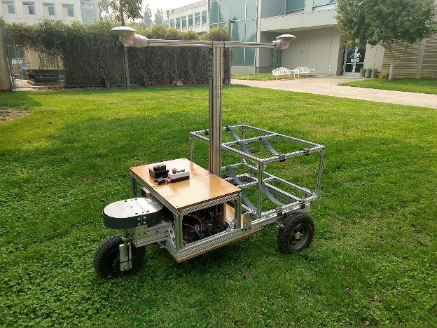

Grapebot

Grapebot is a three-wheeled electric vehicle built to carry up to four tubs of grapes, about 25 pounds each. It is 68 inches long, 44 inches wide, and weighs about 300 pounds.
Grapebot in the field. Also on UC Davis video.
Power comes from a 48-volt, 50 amp-hour lithium-iron-phosphate battery. Field tests ran about 16 hours on a full load before recharge. Each wheel is a hub motor, about 1 kW, which simplifies the drivetrain. With the motors unpowered the wheels freewheel, so the robot can drive on one, two, or all three wheels. Driving the two rear wheels was the most efficient; the third is there for obstacles and rough ground.
The chassis is 1.5-by-3-inch extruded aluminum. A rear frame with rubber straps cradles the tubs. The robot is designed for 100 pounds of grapes and has been driven with a 300-pound load. A mast at the center carries a GPS antenna and can be raised to 8 feet so the antenna clears the canopy. Positioning is RTK-GPS, with corrections over mobile internet, to within a few centimeters. The front bay holds the battery, motor control, navigation, and communication hardware. An onboard Intel NUC does the computing.
A steering motor and a sprocket-and-chain turn the front wheel plus or minus 90 degrees. With differential drive on the rear wheels, the turning radius is nearly zero, and the robot drives forward and backward with the same accuracy. Top speed is 3 m/s; software limits it to 1 m/s, about walking speed. Given a digital map of the vineyard it navigates on its own, and it can also be driven with an Xbox controller. An emergency stop on the electronics bay cuts all power.
The robot runs with instrumented picking carts. The system needs the positions of the robot, the carts, and the collection station, plus a digitized vineyard map for routing. Other software decides how one robot should serve several pickers. Much of that stack started in an earlier USDA-NIFA project on robotic aids for strawberry harvest.